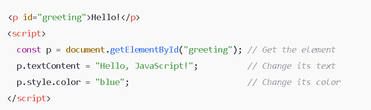

The browser turns your HTML into a tree-like structure called the DOM. Each HTML element is a node in this tree. JS can read and modify this tree, which makes the page interactive.
document.getElementById("myId") // Select by ID document.getElementsByClassName("myClass") // Select by class (returns a collection) document.querySelector(".myClass") // Select first element that matches CSS selector document.querySelectorAll(".myClass") // Select all matching elements (returns NodeList)

×
Events
alert() is a built-in JavaScript function provided by the browser. It shows a popup dialog with a message and an OK button.